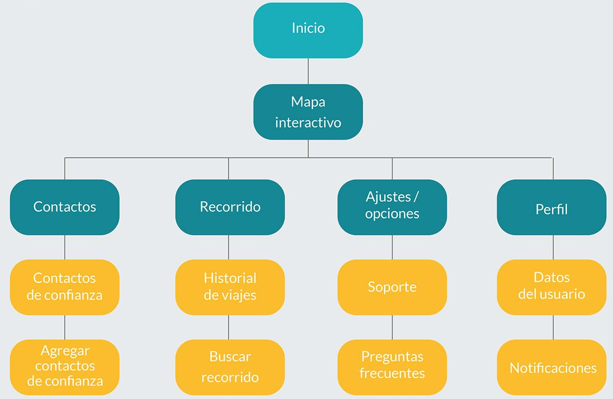
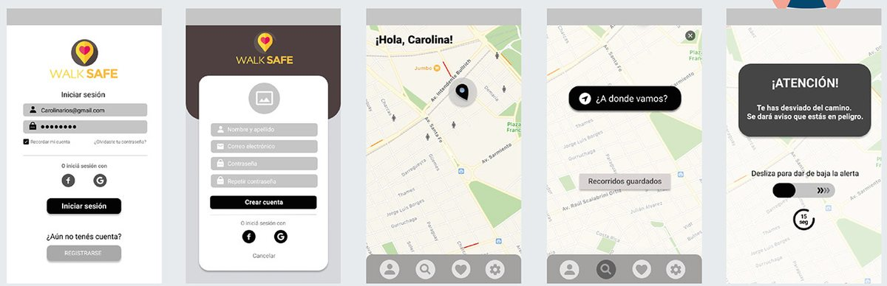
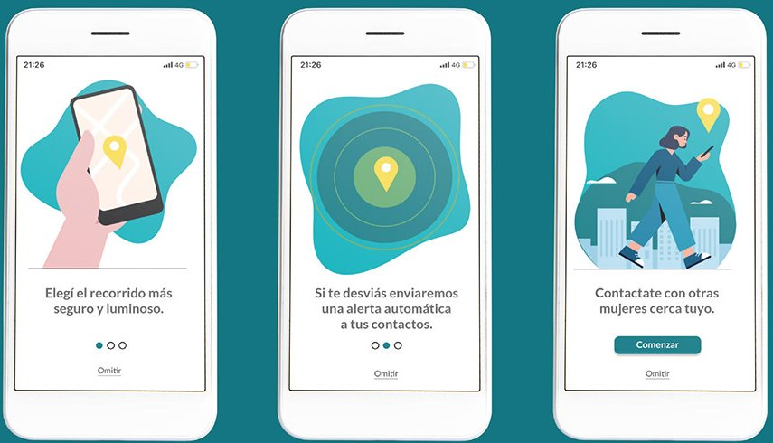
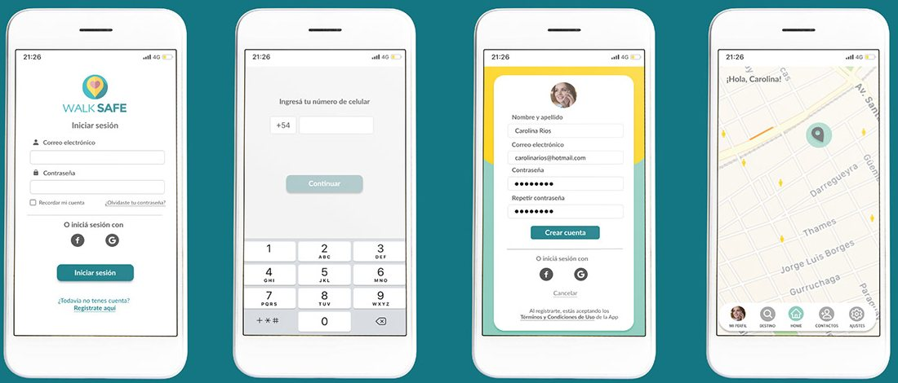
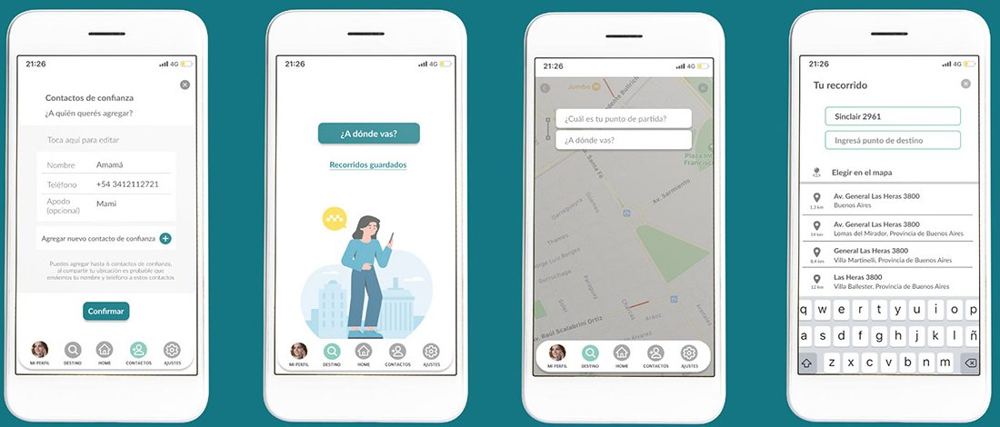
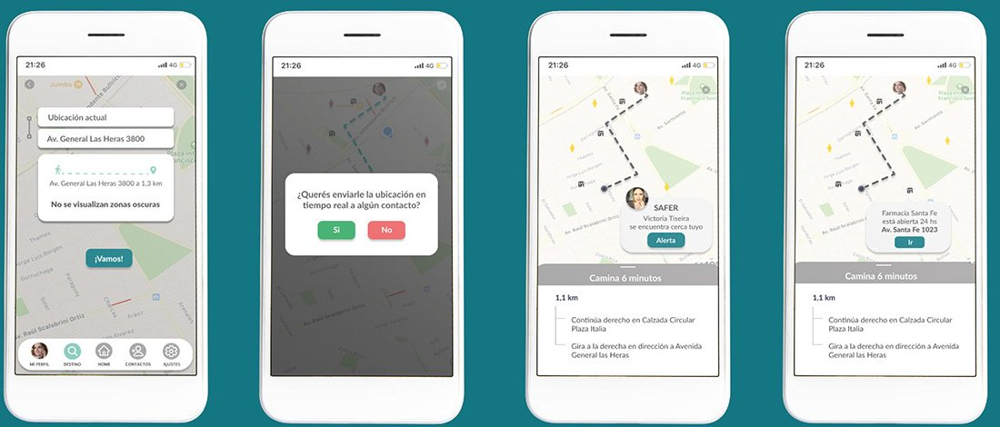
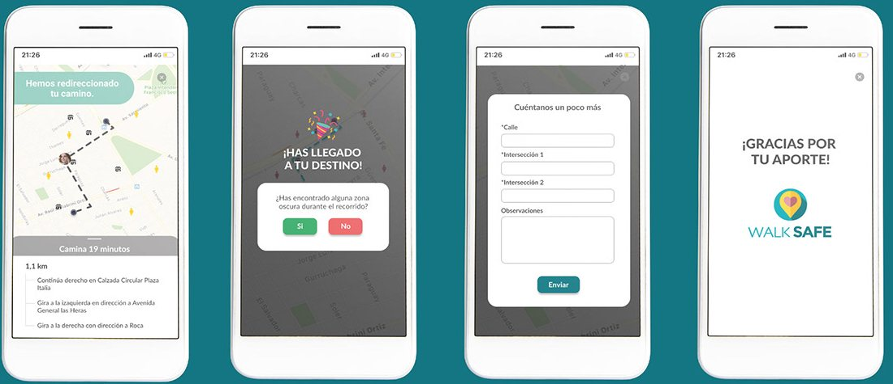
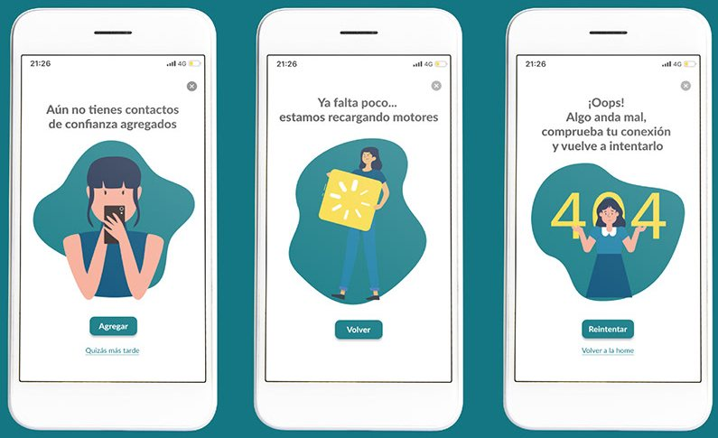

11Mobile app · Case studyApp mobile · Caso de estudio · 2020
Walk SafeWalk Safe
A safety app for women moving around the city, especially at night: share your route in real time with trusted contacts and trigger an alert if something goes wrong.
Una app de seguridad para mujeres que se mueven por la ciudad, sobre todo de noche: compartí tu recorrido en tiempo real con contactos de confianza y activá una alerta si algo sale mal.

The problem
El problema
In Argentina, studies at the time reported that a woman died every 26 hours as a victim of gender violence. Buses are the most used transport among women, but usage drops at night: many avoid them, more than half take a taxi, and most share their real-time location with their contacts.
En Argentina, los estudios de ese momento indicaban que una mujer moría cada 26 horas víctima de violencia de género. El colectivo es el medio más usado por las mujeres, pero de noche su uso cae: muchas lo evitan, más de la mitad toma un taxi y la mayoría comparte su ubicación en tiempo real con sus contactos.
At night
De noche
Personas
Personas
Lorena, 20, San Nicolás
Lorena, 20, San Nicolás
“I enjoy my freedom studying what I love.” Shares her location with friends and moves around alone, but avoids public transport at night.
“La libertad la disfruto estudiando lo que me apasiona.” Comparte su ubicación con amigos y se mueve sola, pero evita el transporte público de noche.
Carolina, 25, Buenos Aires
Carolina, 25, CABA
“When choosing a taxi, I prefer women drivers, they make me less afraid.” Uses private ride apps and asks to be accompanied to meet strangers.
“A la hora de elegir un taxi, prefiero taxistas mujeres, me generan menos miedo.” Usa apps de autos privados y pide que la acompañen a encuentros con desconocidos.
Benchmark
Benchmark
| SheTaxi | Uber | Safe 365 | WeHelp | Life360 | |
|---|---|---|---|---|---|
| GeolocationGeolocalización | ✓ | ✓ | ✓ | ✓ | ✓ |
| Trusted contactsContactos de confianza | ✕ | ✓ | ✓ | ✓ | ✓ |
| Alert buttonBotón de alerta | ✕ | ✕ | ✓ | ✓ | ✓ |
| Cancel an alertCancelar una alerta | ✕ | ✕ | ✕ | ✓ | ✓ |
| FreeGratuito | ✓ | ✓ | ✓ | ✓ | ✕ |
Insights
Insights
- When women feel unsafe on the street they already use many strategies: pretending to talk on the phone, walking faster, not wearing headphones. Adding a manual alert button means one more thing to remember.Cuando se sienten en peligro en la calle ya usan muchas estrategias: fingir que hablan por teléfono, acelerar el paso, no usar auriculares. Sumar un botón de alerta manual es una preocupación más.
- Public space feels hostile, so routines adapt and the street becomes a place to pass through rather than to enjoy.El espacio público se vive como hostil, las rutinas se adaptan y la calle pasa a ser un lugar de tránsito en vez de disfrute.
- For many, public transport is the only option, and crowded buses and trains bring more harassment.Para muchas el transporte público es la única opción, y los colectivos y trenes llenos implican más acoso.
How might we give women an app that keeps them safe on the street and activates automatically if they're in danger, alerting close contacts?
¿Cómo podemos hacer para que las mujeres tengan una app que les dé seguridad al transitar y se active de forma automática si están en peligro, avisando a sus contactos?
Guiding principles
Principios rectores
Empathy
Empatía
Users should feel safe and protected.
Que se sientan seguras y protegidas.
Closeness
Cercanía
Quickly reach nearby women or places open 24 hours.
Llegar rápido a mujeres cercanas o lugares abiertos las 24 horas.
Speed
Rapidez
A simple, fast interface with clear navigation.
Una interfaz simple y rápida con navegación clara.
Accessibility
Accesibilidad
Usable by anyone, as autonomously as possible.
Que cualquiera la pueda usar, con la mayor autonomía posible.


Testing & iterations
Pruebas e iteraciones
- Users confused the “add contacts” button, so it was redesigned.Las usuarias confundían el botón de agregar contactos, así que se rediseñó.
- The seconds counter was confusing and was changed.El contador de segundos resultaba confuso y se modificó.
- At users' request, a “share real-time location” option was added.Por pedido de las usuarias, se agregó “enviar ubicación en tiempo real”.
- Besides the automatic alert when deviating from the route, an alert for staying in the same place too long was added.Además de la alerta por desvío, se agregó una alerta por permanecer mucho tiempo en el mismo lugar.





